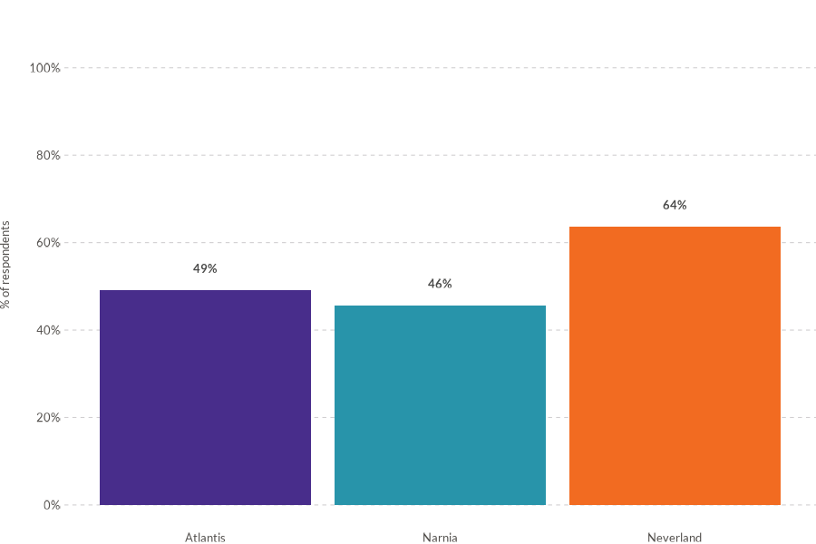
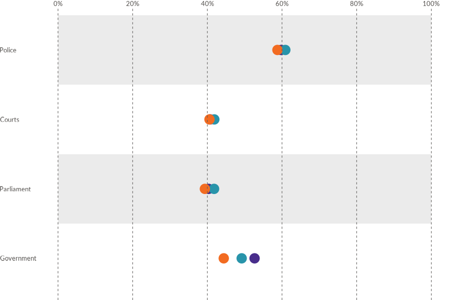
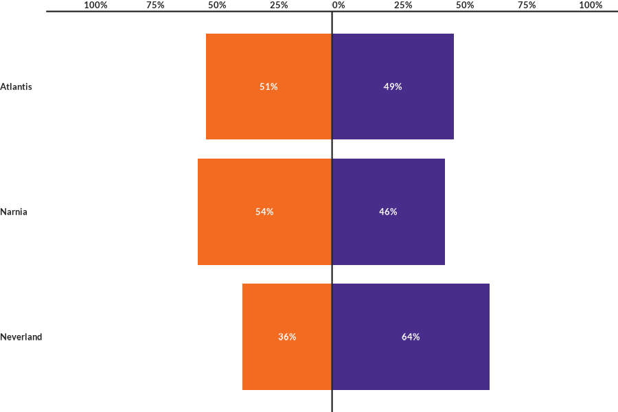
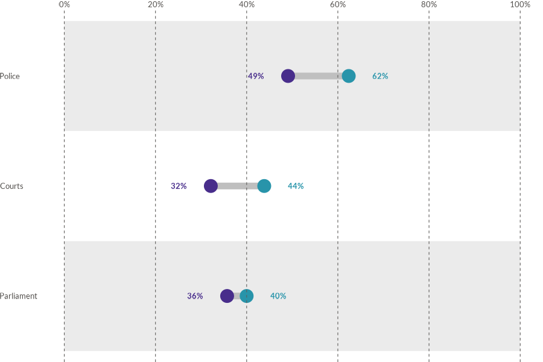
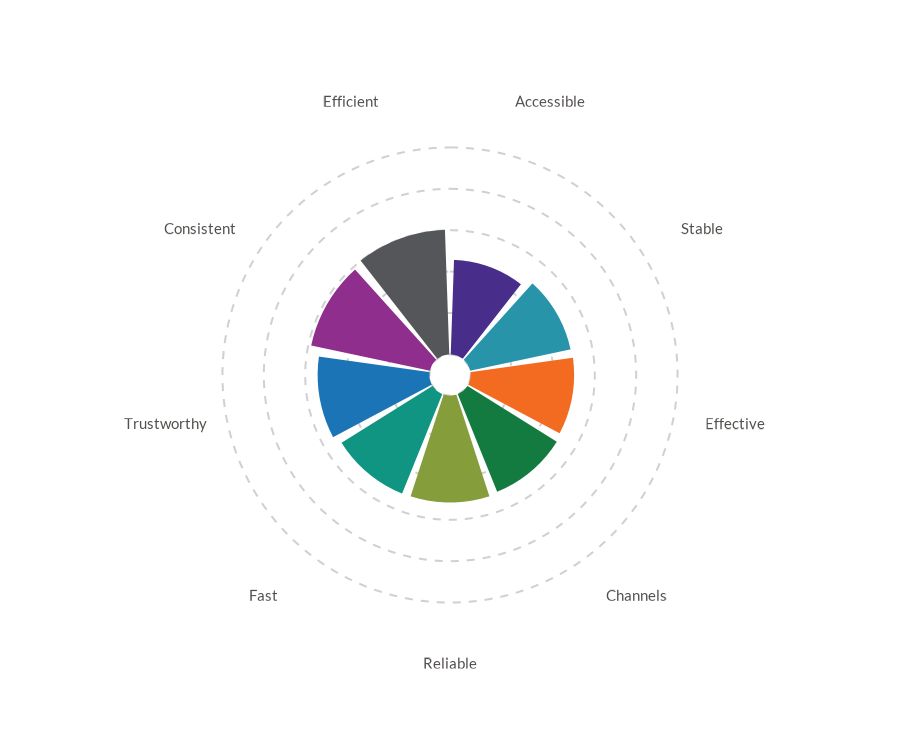
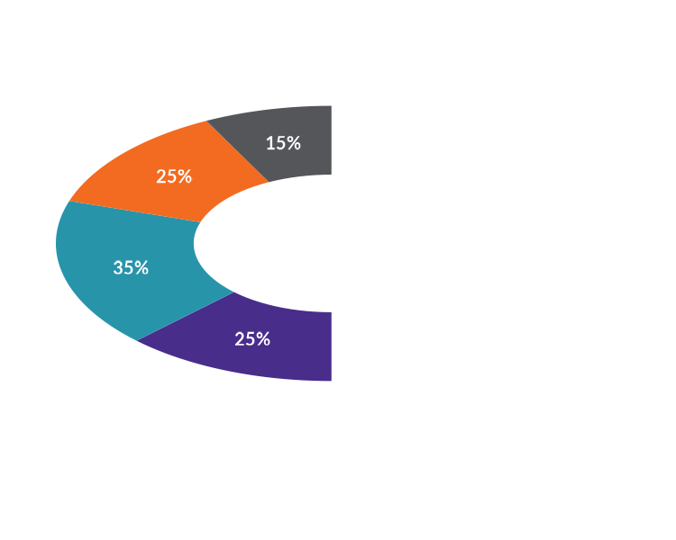
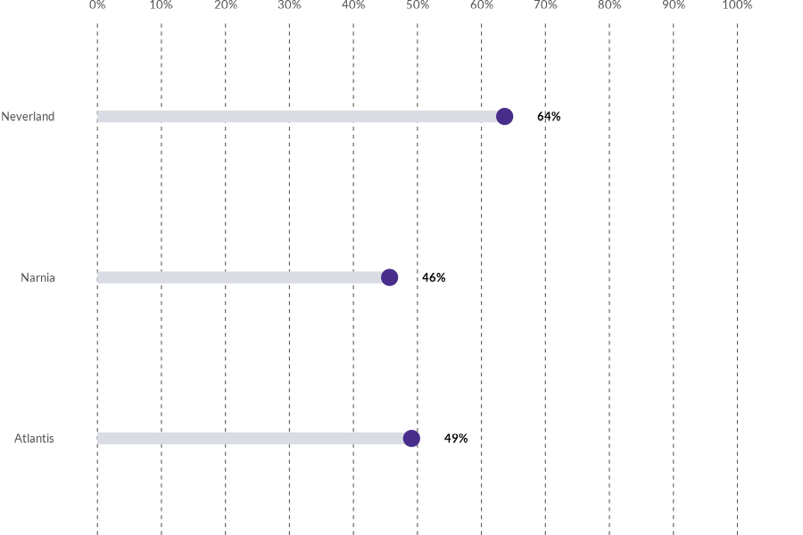
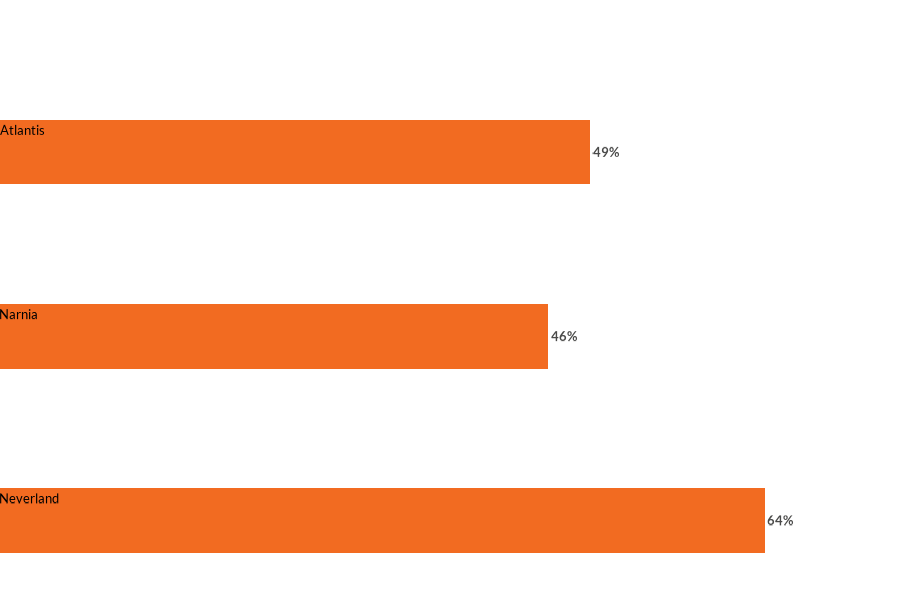
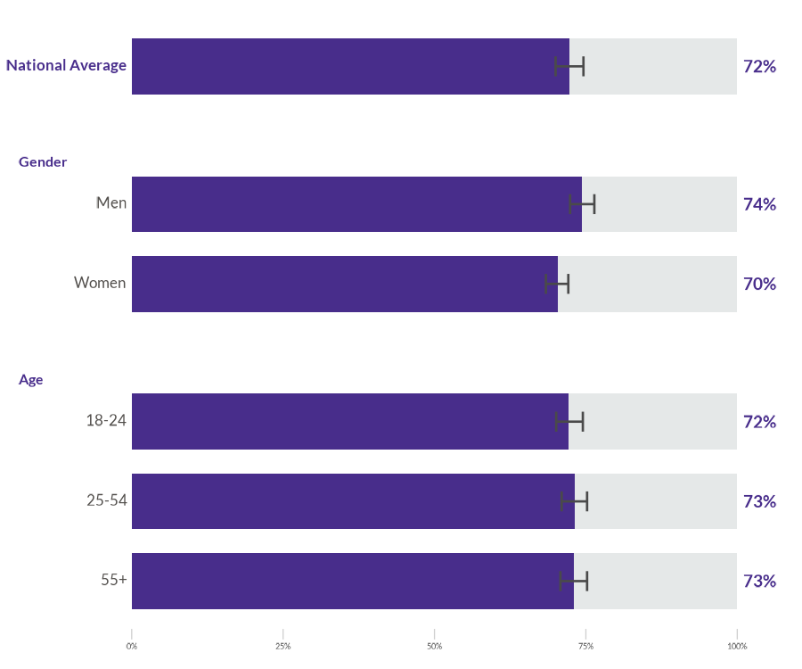

WJPr is an R package from the World Justice Project Data Analytics Unit for producing WJP-style graphics and working with Rule of Law Index data. It is designed for analysts who need publication-ready charts, reproducible examples, and consistent visual language across country-report and research workflows.
Features
WJPr provides:
- Chart functions for bars, diverging bars, grouped bars, dots, lines, slopes, dumbbells, lollipops, radar, rose, and gauge visualizations.
- Built-in sample datasets for Rule of Law Index and General Population Poll workflows.
- A shared WJP theme, fonts, and color guidance for consistent report graphics.
- Validation helpers for checking chart-ready data before plotting.
Installation
WJPr is hosted on GitHub. To install the package, ensure you have the devtools package installed and use the following commands:
# Install WJPr from GitHub
devtools::install_github("worldjusticeproject-org/WJPr")Usage
Load the package into your R session:
Example: Creating a Visualization
Create a simple WJP-style bar chart:
# Load WJP fonts when using the default theme
wjp_fonts()
# Loading data
gpp_data <- WJPr::gpp
# Prepare the data
data4bars <- gpp_data %>%
select(country, year, q1a) %>%
group_by(country, year) %>%
mutate(
q1a = as.double(q1a),
trust = case_when(
q1a <= 2 ~ 1,
q1a <= 4 ~ 0,
q1a == 99 ~ NA_real_
),
year = as.character(year)
) %>%
summarise(
trust = mean(trust, na.rm = TRUE),
.groups = "keep"
) %>%
mutate(
trust = trust*100
) %>%
filter(year == "2022")
# Draw the chart
wjp_bars(
data4bars,
target = "trust",
grouping = "country",
colors = "year",
cvec = c("2022" = "#482d8b")
)Chart Gallery
WJPr includes focused chart functions for common WJP reporting patterns:
        wjp_bars() wjp_dots()  Line Chart
Line Chart wjp_lines() wjp_divbars() wjp_dumbbells()  Slope Chart
Slope Chart wjp_slope()  Radar Chart
Radar Chart wjp_radar() wjp_rose() wjp_gauge() wjp_lollipops() wjp_edgebars() wjp_groupbars()
For a complete interactive gallery with code examples, see the Chart Gallery vignette.
Data Structure
All WJPr visualization functions expect data in long (tidy) format:
| grouping | target | colors | labels (optional) |
|--------------|--------|----------|-------------------|
| Category A | 45.2 | Group 1 | "45%" |
| Category B | 32.1 | Group 1 | "32%" |
| Category A | 51.0 | Group 2 | "51%" |
| Category B | 38.5 | Group 2 | "39%" |Key parameters used across all functions:
| Parameter | Description | Type |
|---|---|---|
target |
Values to plot (Y-axis) | Numeric column |
grouping |
Categories (X-axis or rows) | Character/Factor |
colors |
Variable for color grouping | Character/Factor |
cvec |
Named vector mapping values to colors | c("A" = "#HEX") |
labels |
Text labels to display | Character column |
Validate Your Data
Use wjp_check_data() to verify your data structure before plotting:
wjp_check_data(
data = my_data,
type = "bars",
target = "value",
grouping = "category",
colors = "group",
cvec = c("Group 1" = "#482d8b", "Group 2" = "#2894aa")
)For detailed guidance, see the Data Preparation vignette.
Documentation
Comprehensive documentation is available for all functions and datasets. Use the R help system to access it:
?WJPr::wjp_linesContributing
Contributions are welcome! Before contributing, please read our guidelines:
Quick Start
- Fork the repository
- Create a feature branch:
git checkout -b feature/new-chart - Follow the coding conventions in CONTRIBUTING.md
- Submit a pull request
Documentation Requirements
- Roxygen2 with
@export,@param,@return,@examples - Include
lifecycle::badge("experimental")in description - Add example to
data-raw/generate-examples.R - Update
CLAUDE.md
Resources
- CONTRIBUTING.md - Complete contribution guidelines
- Development Guide - Step-by-step tutorial
- Issues - Report bugs or request features